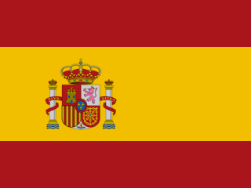
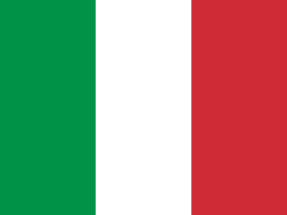

Gosta de imprevisibilidade?
O Brasileirão já teve 17 campeões diferentes e rebaixa quatro clubes por ano: ninguém está seguro.
Conhecer o BrasileirãoQuantos clubes cada liga tem, quantos jogos são disputados por temporada e quem mais venceu.
| Liga | Formato | Maior campeão | Campeão mais recente | |||
|---|---|---|---|---|---|---|
| Clubes | Rodadas | Jogos | Clube | Títulos | ||
 Brasileirão Brasileirão |
20 | 38 | 380 | Palmeiras | 12 | Flamengo (2025) |
 Premier League Premier League |
20 | 38 | 380 | Manchester United | 13 | Arsenal (2025/26) |
 La Liga |
20 | 38 | 380 | Real Madrid | 36 | Barcelona (2025/26) |
 Serie A |
20 | 38 | 380 | Juventus | 36 | Inter de Milão (2025/26) |
 Bundesliga Bundesliga |
18 | 34 | 306 | Bayern de Munique | 34 | Bayern de Munique (2025/26) |
| Total | 98 | 186 | 1.826 | Real Madrid e Juventus: 36 títulos cada | 5 campeões diferentes | |
Premier League: títulos a partir de 1992 (com a antiga primeira divisão, Liverpool e Manchester United têm 20 cada). Bundesliga: títulos a partir de 1963 (com o Campeonato Alemão de 1932, o Bayern soma 35).
A maior pontuação de um campeão em cada liga. Como a Bundesliga tem só 34 rodadas, o aproveitamento (pontos conquistados sobre pontos possíveis) é a forma justa de comparar.
| Pos. | Campeão | Pontos | % |
|---|---|---|---|
| 1 | Juventus Serie A, 2013/14 |
102 | 89,5% |
| 2 | Bayern de Munique Bundesliga, 2012/13 |
91 | 89,2% |
| 3 | Manchester City Premier League, 2017/18 |
100 | 87,7% |
| 3 | Real Madrid e Barcelona La Liga, 2011/12 e 2012/13 |
100 | 87,7% |
| 5 | Flamengo Brasileirão, 2019 |
90 | 78,9% |
| % = aproveitamento. Vitória vale 3 pontos em todas as ligas: em 38 rodadas o máximo é 114 pontos; em 34 rodadas, 102. No Brasileirão, consideramos a era com 20 clubes (desde 2006). | |||
Os jogadores que mais marcaram gols na história de cada liga.
| Liga | Jogador | Gols | Principal clube |
|---|---|---|---|
| La Liga | Lionel Messi (Argentina) | 474 | Barcelona |
| Bundesliga | Gerd Müller (Alemanha) | 365 | Bayern de Munique |
| Serie A | Silvio Piola (Itália) | 274 | Lazio |
| Premier League | Alan Shearer (Inglaterra) | 260 | Newcastle |
| Brasileirão | Roberto Dinamite (Brasil) | 190 | Vasco |
Cada liga tem um jeito próprio de jogar e de torcer. Veja qual tem mais a ver com o seu gosto.
O Brasileirão já teve 17 campeões diferentes e rebaixa quatro clubes por ano: ninguém está seguro.
Conhecer o Brasileirão
A liga que mais fatura no mundo tem elencos fortes em quase todos os clubes e poucos jogos fáceis.
Conhecer a Premier League
Foi o palco de Messi e Cristiano Ronaldo e ainda tem um dos clássicos mais famosos do planeta.
Conhecer La Liga
A escola do catenaccio valoriza a organização defensiva e os técnicos estrategistas.
Conhecer a Serie A
Mais de 42 mil torcedores por jogo em 2025/26 e a famosa Muralha Amarela do Dortmund.
Conhecer a Bundesliga